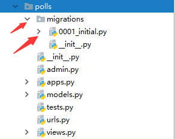
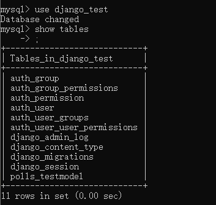

Django中的模型
ORM
对象关系映射（Object Relational Mapping）：通过使用描述对象和数据库之间映射的元数据，将面向对象语言程序中的对象自动持久化到关系数据库中。
映射关系
| model | db |
|---|---|
| 实体类 | 表名 |
| 类属性 | 表字段 |
| 类实例 | 表记录 |
数据库配置
在setting.py中配置数据库信息
DATABASES = {
'default': {
'ENGINE': 'django.db.backends.mysql',
'NAME': 'db_name',
'USER': 'root',
'PASSWORD': '123456',
'HOST': '127.0.0.1',
'PORT': 3306,
}
}
参数说明：
ENGINE：
# 可选值有，分别对应不同的数据库
django.db.backends.sqlite3
django.db.backends.postgresql
django.db.backends.mysql
django.db.backends.oracle
NAME：数据库的名称。如果使用的是 SQLite，数据库将是你电脑上的一个文件，在这种情况下， NAME 应该是此文件的绝对路径，包括文件名。
如果你不使用 SQLite，则必须添加一些额外设置，比如 USER 、 PASSWORD 、 HOST 等等。
想了解更多数据库设置方面的内容，请看文档：DATABASES
创建模型
语法：
class ModelName(models.Model):
属性名 = models.字段类型(字段选项)
字段类型:
分别对应数据库中的数据类型
CharField() varchar()
EmailField() varchar()
URLField() varchar()
ImageField() varchar()
IntegerField() int
FloatField() float
DecimalField() decimal
BolleanField() boolean
DateField() data
DateTimeField() datetime
TextField() text
字段选项:
1. default
2. null: True 或 False
3. db_column: 指定列名
4. db_index: True 或 False 创建索引
5. max_length: 最大长度
# models.py
from django.db import models
from django.db.models import CharField
class TestModel(models.Model):
name = CharField(max_length=50)
创建好模型之后需要同步数据库
# 1. 将models.py中的内容生成中间文件
python manage.py makemigrations
# 2. 将中间文件映射到数据库中
python manage.py migrate
执行完第一条之后会发现应用目录下多了一个中间文件。(遇到问题可以看这篇文章： https://kongping.net/blog/post/5538/ )

此时只是生成了中间文件，数据库中是没有表的（因为还没有同步到数据库）
执行第二条语句：python manage.py migrate
成功同步到数据库中，看下图。

tips: 每次修改模型都要同步一下！
版本的切换指令
0001-initial.py
0002-xxxx.py
0003-xxxx.py
python manage.py migrate 应用的名称 版本号
模型中的CRUD (create read update delete)
增加数据 create
- Entry.objects.create(属性=值，属性=值)
返回值
插入成功：返回创建好的实体对象
插入失败：返回None，产生异常
- 创建一个Entry对象，并通过save()进行保存
obj = Entry(属性=值, 属性=值)
obj.属性 = 值
obj.save()
无返回值，保存成功后，obj会被重新赋值(obj多了一个id属性)
```python def index_view(request): obj = TestModel() obj.name = 'xxx' print(obj.id)
obj.save()
print(obj.id)
return HttpResponse('index')
# 执行结果 None 1 ```
查询数据 read
通过Entry.objects 调用查询接口函数
Entry.objects 提供了对该实体的所有的数据的查询
- 获取所有查询结果的方法
方法：all()
python
Enrty.objects.all()
返回：QuerySet(查询结果集，本质是一个封装了若干对象的列表)
- 查询返回指定列
方法：values() 或 values('列名1', '列名2')
作用： 查询表中数据的部分列，封装到字典中，再封装到QuerySet中
返回：QuerySet(查询结果集，本质是一个封装了若干字段的列表)
- 查询返回指定列
方法: values_list()
作用：将数据封装到元组中再封装到列表中
- 排序方法
方法：order_by()
语法：
Entry.objects.order_by('col1', '-col2')
默认是升序排序，列名前加-，则表示降序排序
- 查询只返回一条数据
方法：get(条件)
返回：单个实体对象
注意：
该方法只使用于只能查询出一条结果的场合 如果查询多于一条数据或没查询出结果都会抛出异常
- 根据条件查询部分行
方法：filter(条件)
返回： QuerySet
python
# 查询Author实体中id=1的信息
authors = Author.objects.filter(id=1)
非等值条件需要使用查询谓词 Field Lookup
语法：
Entry.objects.filter(属性__查询谓词=值)
注意：
python
# 每个查询谓词都是一个独立的功能条件
__exact: 等值条件判断
__gt: 大于条件判断
__year: 得到日期中的年份再进一步判断
__contains: 模糊查询'%xxx%'
__range: 模糊查询 between add
... ...
# 所有支持条件查询的位置处都支持查询谓词
filter() get() exclude()
- 对条件取反
方法：exclude(条件)
python
Author.objects.exclude(id=1)
select * from author where not(id=1)
- 聚合查询（不带分组）
方法：aggregate(列名=聚合函数('列'))
python
Author.objects.aggregate(sumAge=Avg('age'))
聚合函数:
1. Avg(): 平均值
2. Count(): 数量
3. Sum(): 求和
4. Min(): 求最小值
5. Max(): 求最大值
- 聚合查询（带分组）
方法：nnotate(名字=聚合函数('列'))
```python # 按id分组查询平均年龄 Author.objects.values('id').annotate(avg_age=Avg('age'))
集结 where，分组查询，having 于一体的查询接口 Author.objects .filter(id__gte=3) # where子句 .values('age') # group by .annotate(avgAge=Avg('age')) # 查询聚合函数 .filter(avgAge__gte>20) # having子句 .order_by('') # 子句 ```
所有的查询接口函数都可以通过query属性来得到对应的sql语句
例如： Entry.objects.all().query
修改数据 update
- 修改单个实体
python
# 查， 改， 保存
obj = TestModel.objects.filter(id=1).first()
obj.name = 'wwww'
obj.save()
- 批量修改数据
python
# 调用QuerySet的update(属性=值, 属性=值)实现批量修改
objs = TestModel.objects.all()
objs.update(name='xxx')
删除数据 delete
调用实体对象或查询结果集的delete()方法来完成删除
- 删除单个对象
python
au = Author.objects.get(id=1)
au.delete()
- 批量删除
python
Author.objects.all().delete()
F查询 Q查询
F():
作用：在执行过程中获取某列的值
语法：
from django.db.models import F F('列名'): 得到某列的值
# 把所有的Author的age增加10
Author.objects.all().update(age=F('age')+10)
Q()
作用：在查询条件中可以完成or操作
语法：
from django.db.models import Q Q(条件1)|Q(条件2)
# 查询id>=3 或 年龄小于60的信息
authors = Author.objects.filter(Q(id__gte=3)|Q(age__lt=60)).all()
原生的数据库操作方法
- 查询
python
Entry.objects.raw(sql)
返回值:QuerySet()
- 增删改
python
from django.db import connection
def do_sql(request):
with connection.curso() as cursor:
sql = '...';
cursor.execute(sql) # 影响的行数
return xx
自定义查询对象 - objects
objects 的 属性的类型为 models.Manager
- 声明 EntryManager 类，继承自models.Manager, 允许在 EntryManager 中增加自定义函数
python
class EntryManager(models.Manager):
def 函数名(self):
... ...
return ...
- 使用给EntryManager 覆盖Models类中覆盖原有的objects
python
class Entry(models.Model):
objects = EntryManager()